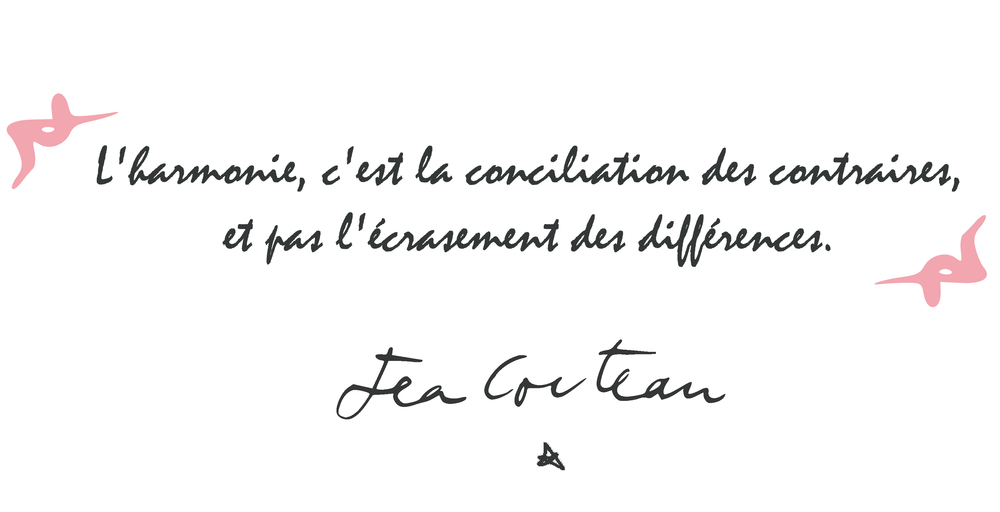

Note d'intention
Par Jérémy Lavalade, producteur & co-réalisateur.
Le carnet
Ma mère n'avait pas 20 ans et se prédestinait à être réalisatrice de cinéma. L'ordinateur n'existait pas encore. Elle tenait un carnet manuscrit dans lequel elle notait des idées de films. Acceptée en école de cinéma, à son grand regret, la vie ne lui a pas permis de suivre cette formation dont elle rêvait tant.
En 2017, au détour d'une discussion, elle m'a fait lire ce carnet. L'une de ses premières idées m'a vraiment interpellé ! Il me fallait absolument continuer ce qu'elle-même n'avait pas pu mener à bien : réaliser un film sur la base de son idée.
Comme le disait déjà le carnet :
ce film n'est qu'une phrase d'introduction.
Deuxième mouvement
L'esprit critique était l'ancrage de son histoire. J'y suis moi-même tellement attaché.
Étudiant à l'ESSEC Business School, j'ai choisi mon école pour sa Raison d'Être « Enlighten. Lead. Change » (Éclairer. Impulser. Transformer) et pour la place prédominante donnée à cet esprit critique. Mon projet s'inscrit pleinement sur l'un des piliers fondamentaux de l'ESSEC : « Face aux transformations économiques, sociales et environnementales qui n'ont jamais été aussi rapides et aussi profondes, de nouvelles formes de leadership doivent émerger ».
Troisième mouvement
Dans un monde qui manque parfois de cohérence environnementale, j'ai pris conscience, notamment à travers mes cours de Responsabilité Sociétale des Entreprises, de l'impact de nos décisions en tant que futurs managers et entrepreneurs sur le processus de transition.
En tant qu'acteurs du changement, il est crucial de concentrer notre énergie vers des initiatives bénéfiques plutôt que de succomber à des pratiques de greenwashing qui, bien que séduisantes en surface, n'offrent qu'une embellie trompeuse sans réel impact positif. Notre rôle est aussi de convaincre chacun, quel que soit son rôle dans la société, de l'importance de conserver un esprit critique en alerte.
Quatrième mouvement
Pour sensibiliser le grand public à cette responsabilité individuelle, le film à suspense s'est imposé à moi comme vecteur de communication. Le point de départ de l'intrigue place le spectateur dans un monde post-apocalyptique, un monde à présent idéal, respectueux de l'environnement, apaisé et attirant. Le spectateur se laissera emporter par la douceur de vivre, le plaisir intense de cette harmonie.
En dépit de ce qu'il voit, cette harmonie si parfaite va progressivement susciter chez lui des intuitions indéfinissables qui iront jusqu'à le conduire à la frontière entre doutes et certitudes.
L'utopie se transformera progressivement en dystopie : pour défendre les valeurs fondamentales prônées sur l'île, Tana décidera, quel qu'en soit le prix pour elle, d'être le révélateur indirect d'un système qui n'est pas aussi harmonieux qu'il n'y paraît.

À travers cette recherche d'équilibre entre harmonie et doute, esprit critique et passivité, humains et environnement, nous voulons finalement faire ressentir ce plaisir de l'audace et de la remise en question, ce plaisir de prendre part activement, à son niveau, à l'évolution durable de la société…
Jérémy Lavalade
La naissance du projet, en images

Le making of du court-métrage